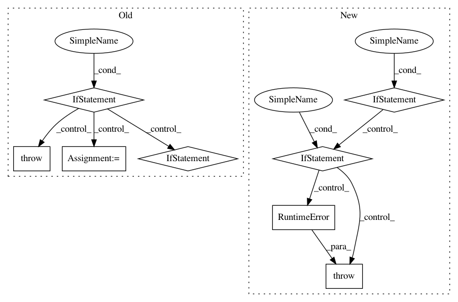

e0b692c96565074d4cb148e6011b2007d0a55348,examples/model_compress/model_speedup.py,,,#,129
Before Change
parser.add_argument("--model_checkpoint", type=str, default=None, help="the path of checkpointed model")
args = parser.parse_args()
if args.example_name == "slim":
if args.masks_file is None:
args.masks_file = "mask_vgg19_cifar10.pth"
slim_speedup(args.masks_file, args.model_checkpoint)
elif args.example_name == "fpgm":
if args.masks_file is None:
args.masks_file = "mask.pth"
fpgm_speedup(args.masks_file, args.model_checkpoint)
elif args.example_name == "l1filter":
if args.masks_file is None:
args.masks_file = "mask_vgg16_cifar10.pth"
l1filter_speedup(args.masks_file, args.model_checkpoint)
elif args.example_name == "apoz":
if args.masks_file is None:
args.masks_file = "mask_vgg16_cifar10.pth"
apoz_speedup(args.masks_file, args.model_checkpoint)
else:
raise ValueError("unsupported example_name: {}".format(args.example_name))
After Change
parser.add_argument("--masks_file", type=str, default=None, help="the path of the masks file")
args = parser.parse_args()
if args.example_name != "all":
if args.masks_file is not None:
config[args.example_name]["masks_file"] = args.masks_file
if not os.path.exists(config[args.example_name]["masks_file"]):
msg = "{} does not exist! You should specify masks_file correctly, " \
"or use default one which is generated by model_prune_torch.py"
raise RuntimeError(msg.format(config[args.example_name]["masks_file"]))
model_inference(config[args.example_name])
else:
model_inference(config["fpgm"])
model_inference(config["slim"])
model_inference(config["l1filter"])
model_inference(config["apoz"])
In pattern: SUPERPATTERN
Frequency: 3
Non-data size: 8
Instances
Project Name: microsoft/nni
Commit Name: e0b692c96565074d4cb148e6011b2007d0a55348
Time: 2020-03-23
Author: Quanlu.Zhang@microsoft.com
File Name: examples/model_compress/model_speedup.py
Class Name:
Method Name:
Project Name: dmlc/gluon-cv
Commit Name: fdd55d36c05c747643fc98430a7f9b787b6cec16
Time: 2019-08-29
Author: yizhu59@gmail.com
File Name: gluoncv/data/kinetics400/classification.py
Class Name: Kinetics400
Method Name: _TSN_RGB
Project Name: NervanaSystems/nlp-architect
Commit Name: 9267d77a87ac5d6736953f4822deab36b20945c7
Time: 2020-09-22
Author: daniel.korat@intel.com
File Name: nlp_architect/models/absa/inference/inference.py
Class Name: SentimentInference
Method Name: run_multiple